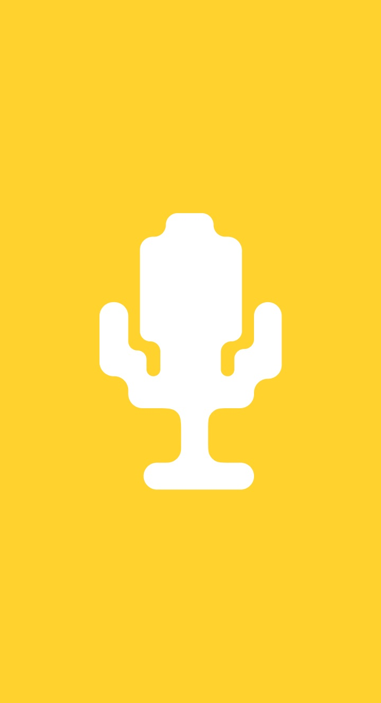

too many versions
too many places
& too easy to lose


I designed this app end-to-end alongside a fellow designer friend. We shared responsibility across the process, from research and small-scale studies to ideation, prototyping, and defining the app’s visual language.
I took lead on key parts of the design process, in development of the visual language, designing the landing page, and building the final full-flow prototype.

Our Solution:
Write lyrics, capture ideas, record drafts and build your projects without the usual mess in between.